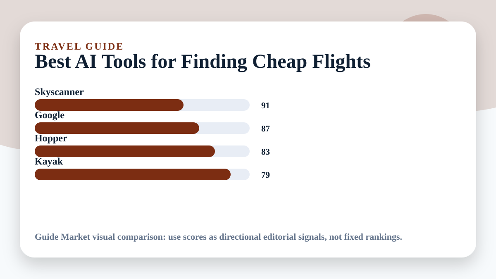

Best AI Tools for Finding Cheap Flights
Updated May 11, 2026. Prices and plans change often; always confirm on the official website before paying.
Cheap flight tools are not magic. They help you see date flexibility, nearby airports, fare trends, and route combinations faster. The real advantage comes from using alerts early and being flexible before prices move.

Editorial verdict
My pick: Google Flights for most searches, Skyscanner for broad exploration, Hopper if you like prediction-style guidance, and Kayak as a second opinion. Never trust one price source without checking the airline directly before booking.
Quick picks
- Best free starting point: Google Flights
- Best broad exploration: Skyscanner
- Best prediction-style app: Hopper
- Best comparison backup: Kayak
Price and feature snapshot
| Tool | Price snapshot | Pros | Cons |
|---|---|---|---|
| Google Flights Official site | Free search tool | Fast date grid, tracking, filters, airline links | Does not sell every fare itself |
| Skyscanner Official site | Free comparison tool | Everywhere search and flexible destination discovery | Final booking may happen through partners |
| Hopper Official site | Free app with paid/fintech-style travel products depending on booking | Price prediction and mobile-first alerts | Extra products can complicate checkout |
| Kayak Official site | Free comparison tool | Filters, alerts, broad travel comparison | Can show partner booking options you must review carefully |
My cheap-flight routine
I start with Google Flights using flexible dates, then check Skyscanner for alternate airports and destinations. If the route is expensive, I set alerts instead of refreshing manually. Before booking, I compare the airline website because baggage rules and customer support can matter more than saving a few dollars.
What counts as a real deal
A cheap fare is not always a good fare. Look at luggage, arrival airport, overnight layovers, refund rules, seat selection, and whether a self-transfer is involved. AI can summarize options, but only the booking page shows the final conditions.
Editorial recommendation
Google Flights is the cleanest default. Skyscanner is better for open-ended trips. Hopper is useful if you like prediction signals, but I would not buy extras without reading the terms carefully.
Best use cases
- Flexible weekend trip
- One-way multi-city backpacking route
- Family trip with baggage included
- Long-haul flight where layovers matter